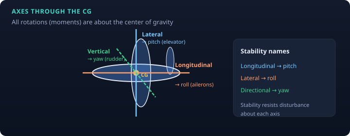
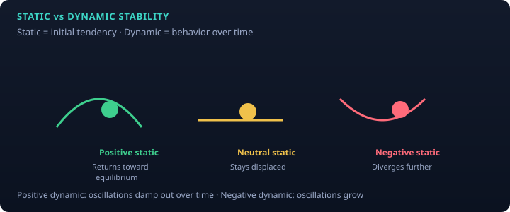
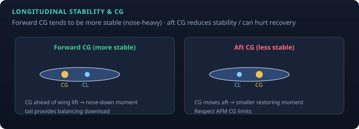

PHAK Ch. 5 · study note
Stability is the airplane’s inherent tendency to return toward a flight condition after a disturbance (gust, brief control input). It is related to—but not the same as—controllability and maneuverability. Design trades stability against how “snappy” the airplane feels.

| Axis (through CG) | Motion | Stability name | Primary control |
|---|---|---|---|
| Lateral | Pitch | Longitudinal stability | Elevator / stabilator |
| Longitudinal | Roll | Lateral stability | Ailerons |
| Vertical | Yaw | Directional stability | Rudder |

| Positive | Neutral | Negative | |
|---|---|---|---|
| Static (initial tendency) | Returns toward original attitude/path | Stays in new position | Diverges further |
| Dynamic (over time) | Oscillations damp out | Oscillations continue undamped | Oscillations grow |
Designers want positive static and positive dynamic stability for training airplanes. Too much stability can make an airplane sluggish; too little is dangerous.
About the lateral axis. Strongly affected by CG location relative to the wing’s center of lift and by the horizontal stabilizer.

About the longitudinal axis. Contributors include:
About the vertical axis. Usually the easiest stability to provide: more side area aft of the CG (fuselage + vertical stabilizer) weathervanes the nose into the relative wind. A larger vertical fin → stronger directional stability.
Figures are original educational SVGs.